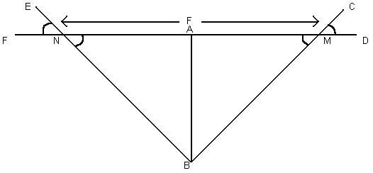
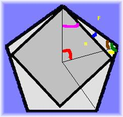
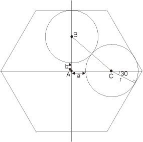

|
Last updated on:
27 April 2009 04:08:54 PM
Comment on this volume: World final
warm up & 2 math problem sets make this volume difficult...
|
No |
Problem Name |
* |
Algorithm |
|
10194-10201:
U. do Brasil (UFRJ) Internal
Contest (2001/10/06 14:00-19:30) |
|
10200 |
Prime Time |
4.5 |
Math (Prime Number) |
|
10201-10206: UVA
Final Local Contest (2001/10/27 8:00-12:00) |
|
10201 |
Adventures in Moving - Part IV |
* |
Haven't try yet |
|
10202 |
Pairsumonious Numbers |
* |
Haven't try yet |
|
10203 |
Snow Clearing |
4.0 |
Math |
|
10204 |
Adventures in Moving - Part V |
* |
Haven't try yet |
|
10205 |
Stack 'em Up |
3.0 |
Ad Hoc |
|
10206 |
Stars |
* |
Haven't try yet |
|
10207-10218:
Math & Number Theory Lovers'
Contest (2001/12/01 8:00-17:00) |
|
10207 |
The Unreal Tournament |
* |
Haven't try yet |
|
10208 |
Liar or Not Liar that is the... |
* |
Haven't try yet |
|
10209 |
Is This
Integration ? |
7.0 |
Math |
|
10210 |
Romeo and Juliet ! |
* |
Haven't try yet |
|
10211 |
Divisibility Testing! Wow! |
* |
Haven't try yet,
again maths... |
|
10212 |
The Last Non-zero Digit. |
* |
Haven't try yet |
|
10213 |
How Many Pieces of Land? |
* |
Haven't try yet |
|
10214 |
Trees in a Wood. |
* |
Haven't try yet |
|
10215 |
The Largest/Smallest Box ... |
7.0 |
Math |
|
10216 |
The Optimal Coffee
Shop!! |
* |
Haven't try yet |
|
10217 |
A Dinner with
Schwarzenegger!!! |
* |
Haven't try yet |
|
10218 |
Let's Dance !!! |
* |
Haven't try yet |
|
10219-10223:
The Rockford Programming Contest
(2001/12/12 7:00-12:00) |
|
10219 |
Find
the ways ! |
5.0 |
Math (Big Integer) |
|
10220 |
I Love Big Numbers ! |
5.0 |
Math (Big Integer + Factorial) |
|
10221 |
Satellites |
4.5 |
Math (Geometry) |
|
10222 |
Decode the
Mad man |
3.0 |
Ad Hoc |
|
10223 |
How many nodes ? |
2.5 |
Math |
|
10224-10228:
University of Waterloo Local Contest - 26 January 2002 |
|
10224 |
Return of the Jedi |
* |
Haven't try yet |
|
10225 |
Discrete Logging |
* |
Haven't try yet |
|
10226 |
Hardwood Species |
5.5 |
Ad Hoc |
|
10227 |
Forests |
4.5 |
Set (Union-Find) |
|
10228 |
Star not a Tree? |
* |
Haven't try yet,
another computational geometry... how to find the center coordinate of
the star? |
|
10229-10235:
Mindbend 2002
Programming Contest (2002/02/16 6:00-10:00) |
|
10229 |
Modular Fibonacci |
5.5 |
Math (Fibonacci + Modulo) |
|
10230 |
Savage Garden |
* |
Haven't try yet |
|
10231 |
Matrix World |
* |
Haven't try yet |
|
10232 |
Bit-wise Sequence |
* |
Haven't try yet |
|
10233 |
Dermuba Triangle |
* |
Haven't try yet, find the pattern first... |
|
10234 |
Frequent Substrings |
* |
Haven't try yet |
|
10235 |
Simply Emirp |
4.5 |
Math (Prime Number) |
|
10236-10245:
World Finals Warmup Oriental
Contest (2002/3/2 7:00-19:00) |
|
10236 |
The Fibonacci Primes |
* |
Haven't try yet |
|
10237 |
Bishops |
* |
Haven't try yet |
|
10238 |
Throw the Dice |
* |
Haven't try yet, look at Eduard's notes |
|
10239 |
The Book-shelver's
Problem |
* |
Haven't try yet |
|
10240 |
The n-Dimensional
Cities |
* |
Haven't try yet |
|
10241 |
Semi-triangular and
also Square |
* |
Haven't try yet |
|
10242 |
Fourth Point!! |
3.5 |
Math (Computational Geometry) |
|
10243 |
Fire! Fire!! Fire!!! |
* |
Haven't try yet |
|
10244 |
First Love !!! |
* |
Haven't try yet |
|
10245 |
The Closest Pair Problem |
6.0 |
Math (Computational Geometry) |
|
10246-10256:
World Finals Warmup Occidental
Contest (2002/3/11 11:00-21:00) |
|
10246 |
Asterix and Obelix |
* |
Haven't try yet |
|
10247 |
Complete Tree
Labeling |
* |
Haven't try yet |
|
10248 |
The Integer All-time
Champ |
* |
Haven't try yet |
|
10249 |
The
Grand Dinner |
4.5 |
Greedy |
|
10250 |
The Other Two Trees |
* |
Haven't try yet |
|
10251 |
Min-Max Cake |
* |
Haven't try yet |
|
10252 |
Common Permutation |
3.5 |
Ad Hoc |
|
10253 |
Series-Parallel
Networks |
* |
Haven't try yet |
|
10254 |
The Priest
Mathematician |
* |
Haven't try yet |
|
10255 |
The knight's Tour |
* |
Haven't try yet |
|
10256 |
The Great Divide |
* |
Haven't try yet |
|
10257-10262:
UVA Local Contest - First Round
(2002/4/13 8:00-12:00) |
|
10257 |
Dick and Jane |
* |
Haven't try yet |
|
10258 |
Contest Scoreboard |
4.5 |
Sorting |
|
10259 |
Hippity Hopscotch |
* |
Haven't try yet |
|
10260 |
Soundex |
4.0 |
Ad Hoc |
|
10261 |
Ferry Loading |
* |
Haven't try yet |
|
10262 |
Suffidromes |
* |
Haven't try yet |
|
10263-10268:
Joint Contest of Gizycko I & Brest State
U (2002/4/18 10:00-15:00) |
|
10263 |
Railway |
* |
Math (Geometry), find the shortest
distance of point M to N segments, Haven't try yet |
|
10264 |
The Most Potent
Corner |
* |
Haven't try yet |
|
10265 |
Toroidal Chess
Queens' Problem |
* |
Haven't try yet |
|
10266 |
Surveying |
* |
Haven't try yet |
|
10267 |
Graphical Editor |
5.0 |
Ad Hoc, Haven't try yet
this will be
tedious... |
|
10268 |
498-bis |
9.9 |
Math, how to handle overflow in the
intermediate values?? |
|
10269-10276:
OIBH Reminiscence Programming
Contest (2002/4/20 6:00-14:00) |
|
10269 |
Adventure of Super
Mario |
* |
Haven't try yet |
|
10270 |
Bigger Square
Please... |
* |
Haven't try yet |
|
10271 |
Chopsticks |
* |
Haven't try yet, DP... similar to Matrix
Multiplication |
|
10272 |
DDR King |
* |
Haven't try yet |
|
10273 |
Eat or Not to Eat? |
* |
Haven't try yet |
|
10274 |
Fans and Gems |
* |
Haven't try yet |
|
10275 |
Guess the Number! |
* |
Haven't try yet |
|
10276 |
Hanoi Tower Troubles
Again! |
4.0 |
Backtracking |
|
10277-10282:
UVA Local Contest - Second Round
(2002/4/27 8:00-12:00) |
|
10277 |
Boastin' Red Socks |
* |
Haven't try yet |
|
10278 |
Fire Station |
* |
Haven't try yet |
|
10279 |
Mine Sweeper |
3.5 |
Ad Hoc |
|
10280 |
Old Wine Into New
Bottles |
* |
Haven't try yet |
|
10281 |
Average Speed |
3.0 |
Ad Hoc |
|
10282 |
Babelfish |
4.0 |
Sorting |
|
10283-10294: Math
Lovers' Contest (2002/05/25 9:00-2002/05/25 18:00) |
|
10283 |
The Kissing Circles |
* |
Haven't try yet, another maths... I
don't like it... |
|
10284 |
Chessboard in FEN |
* |
Haven't try yet |
|
10285 |
Longest Run on the
Snowboard |
3.5 |
Backtracking |
|
10286 |
Trouble with a
Pentagon |
1.5 |
Math (Trigonometry) |
|
10287 |
Gifts in a Hexagonal
Box |
* |
WA, haven't fix this |
|
10288 |
Coupons |
* |
Haven't try yet |
|
10289 |
A Square and
Equilateral Triangles |
* |
Haven't try yet |
|
10290 |
{Sum+=i++} to Reach N |
* |
Haven't try yet, I see from the message
board that this problem is equal to finding how many ODD DIVISORS...
the problem lies in BigNumber now... |
|
10291 |
Cut the Legs |
* |
Haven't try yet |
|
10292 |
The Gossiping System |
* |
Haven't try yet |
|
10293 |
Word Length and Frequency |
3.5 |
Ad Hoc |
|
10294 |
Arif in Dhaka (First
Love Part 2) |
* |
Haven't try yet |
|
10295-10299:
University of Waterloo Local Contest
(2002/6/01 17:00-20:00) |
|
10295 |
Hay Points |
3.0 |
Sorting +
Binary Search |
|
10296 |
Jogging Trails |
* |
Chinese Postman Problem, NP-Complete |
|
10297 |
Beavergnaw |
2.5 |
Math |
|
10298 |
Power Strings |
4.0 |
Ad Hoc |
|
10299 |
Relatives |
4.5 |
Math |
Total submit-able problems in this
volume: 100
Solved problems: 31
Problems in Wrong Answer list from this volume: 2
Unattempted problems: 67
Total hints in this volume: 31
Simulating what this problem wants is enough. You don't need sophisticated
prime generator such as Sieve of Eratosthenes. Simple (but clever) prime
testing is sufficient.
The lane are bidirectional... No matter what, you need to traverse each lane
(at least) twice... But if you think about it, the optimal solution will be
just that, each edge used twice. No need to do backtracking or whatever.
Just sum all the Euclidian distance between each intersection, then multiply
it by two, and then divide by plowing speed (20 km/hour) to get the time.
Output the time in mm:ss format (minutes:seconds).
We know from the problem statement, "N,A & M are always kept in a straight
line". So, F & D are points in this line too i.e. F,N,A,M & D are all on the
same line. So we get a triangle BMN with sides MN, BN and BM. The problem
statement asks us to find the base of this triangle.
ENF and CMD are given and angle BNM=ENF, BMN=CMD, (opposite angles of two
intersecting straight lines). Height of the triangle is AB, which we need to
calculate from the co-ordinates of A and B. In triangle ABM, base AM=AB/tan(AMB).
In triangle ABN, base AN=AB/tan(ANB). As triangle BMN=ABN+ABM, the length of
base of BMN, MN=AM+AN. This is the result.

If you have a number and someone ask you to tell how many digits are there,
what will you do? Of course you will not go to count the digit by pointing
your finger! There is a formula to count the digit for a number.
digit = floor [log10(number)] + 1
This formula is enough for this problem. While doing the combination,
instead of multiplication do summation and division do subtraction. Finally
take the floor and increase 1.
Note:
1. be careful of overflow, n and k can be very big (to play safe I use long
long ~> %lld)
2. try to maintain the sum of log10s inside double data type limit... i.e.
do subtractions whenever possible... i.e.
digit of 6 C 2 = floor [ log10(6) + log10(5) -
log10(2) - log10(1) ] + 1
calculate alternatively as follows:
floor [ log10(6) - log10(2) + log10(5) - log10(1) ] + 1
1000! can be represented using 427 consecutive
long integer to store the result. However, if you are confused, just use
your standard Big Integer algorithm, then pre-calculate all the factorial from
0-1000. Then count the sum of digits one by one ... It is slow but you can
pre-calculate it anyway...
Even though your Big Num code is slow, you
compute it on your computer not on judge system. Time limit can be avoided
using this method.
This is a pure geometry/trigonometry problem.
The steps will be like this:
Step 1 : First,
convert the degree to radian
(If it is given in minute then convert it to degree first. deg=min/60, rad=(pi*deg)/60).
Step 2 : If degree == 180
arc = (R+d) * red
cord = 2 * R+d // R is
the radius of the earth, d is the distance from
earth
Step 3 : if degree < 180
arc = (R+d) *
red
cord = (R+d) * (sin(red)
/ sin(red2)) // red2 = (pi * (180 - deg)) / 180
Don't forget to take the smallest side.
It means, if the given degree > 180, then degree =
360 - degree.
Do what they want. Simple.
Catalan number is the answer for total number
of binary trees. In this problem you are required to compute the reverse
Catalan number. But, since computing the reverse is a bit hard, use a
trick... Since there is only 19 Catalan numbers less than 2^32-1 (as
required in input), You can pre-calculate them first, then whenever you get
the input, check where its index in the Catalan number array.
Those 19 numbers are: {
1,2,5,14,42,132,429,1430,4862,16796,58786,208012,742900,
2674440,9694845,35357670,129644790,477638700,1767263190 }.
If you want challenge, please compute these
numbers by yourself first.
This problem seems 'easy' because what you
need to do is to count the percentage of each tree in the population. The
hardest part is because number of trees can be 1 million, making standard
data structure too slow... You need a kind of sophisticated implementation
of hash table or binary search tree to store these tree name
<-> frequency mapping... The easiest way is to use C++ STL map. Study the
documentation to master the usage of this library.
Use Union-Find data structure... Initially
create P sets (P = number of people), and then union set i and set j if
people i and people j hear the same thing (they have consistent opinion). Do
that for all pairs of i and j (still within time limit, don't worry). At the
end, output how many sets remaining. This number of remaining sets signify
the number of different groups of opinions. Done :)
We are familiar with Fibonacci sequence:
0,1,1,2,3,5,8,13,21... In this problem we are asked to compute this sequence
mod 2^m. So the above sequence if mod by 2^2 = 4 will become:
0,1,1,2,3,1,0,1,1. Since n can be as big as
2147483647, you'll get TLE if you
calculate it linearly. Fortunately there is a O(log n) method to calculate
Fibonacci, click here and search for
Fibonacci. By using this O(log n) Fibonacci computation algorithm, you are
on the safe side. Just modulo the result by 2^m on the fly... Oh yeah, don't
forget to use long long (Int64) data structure.
This problem is a bit tricky...
Basically there are only 3 possible cases:
1. if N is really not prime, then directly output "not prime"
2. Hm... N is prime
2.a). if N is not the same as reverse of N and the reverse of N is prime,
output "emirp"
2.b). not emirp, just output "prime"
This is very good PIE problem. Can be solved
using DP too. Must use BigNumber. Similar to problem 10759.
You know the common points because among the 4 given coordinates, 2 of them must be
similar, then you can generate 2 vectors from the given input.
Rough sketch:
/
/
Common point -----
Translate this common point along the first vector, and then translate again
the resulting point along the second vector. You'll get the fourth one.
----- Fourth Point!!
/ /
/ /
Common point -----
This problem can be solved efficiently using O(5n) Plane Sweep algorithm
(after sorting the points using O(n log n) algorithm)... Details regarding
Plane Sweep algorithm can be found in several text in Computational
Geometry. Do some google search regarding keywords "Plane Sweep" & "Closest
Pair".
Even though the underlying algorithm for this "complex" problem is Maximum
Flow and seems so similar to problem 10092, this problem is actually a
special version of Maximum Flow since the bipartite graph in the middle is a
complete bipartite graph..., therefore this problem can be solved using
Greedy method.
Anyway let's analyze the Maximum Flow solution first.
->(capacity member1) -> Team1 Table1
(capacity size1)-->
Source ->(capacity member2) -> Team2 -**-> Table2 (capacity size2)--> Sink
->(capacity memberM) -> TeamM
Table3 (capacity size3)-->
TableN (capacity sizeN)-->
** Draw edge for any possible matching of team and table, all has capacity
1. Why? because we want to try to distribute members from a team to these
tables. A maximum flow of this Flow Network is what we want answer...
Pass this Flow Graph to your Network Flow
algorithm (Ford Fulkerson, Edmund Karp, or anything else that you know) to
get the maximum flow. Output "1" and the distribution of table number per
team if all teams has max flow. Output "0" otherwise...
Okay, this will solve the problem, but will
not be able to pass the time limit. To be able to pass the time limit, we
must use the property that this graph is a complete bipartite graph, use
the following algorithm:
-. sort the team based on number of members (decreasing)
-. then greedily assign them to tables considering that:
capacity limit of each table = min(capacity of that table,number of
team)
because no member of the same team sit in the same table.
-. so just spread the team members over the tables that has remaining
capacity
-. decrease the capacity of the selected table.
-. repeat this process...
-. if all person can be placed => output the configuration, else output
"0"
At first, when you see the problem title "Permutation", you may be thinking
of n! possible permutation of characters with length n... However this
problem is far easier than that.
If you examine carefully, "permutation of subsequence" really simplifies the
problem. All you have to do now is count each alphabet's frequency for
string a and string b, and choose the smallest possible value for 'a', for
'b', ... up to 'z' where these common frequency > 0.
Example:
a
= "pretty" -> 1 'e', 1 'p', 1 'r', 2 't', 1 'y'
b = "women" -> 1 'e', 1 'm', 1 'n', 1 'o', 1 'w'
only 'e' is the common alphabet, and frequency of 'e' is > 0 (which is 1)
so, output 1
While the problem itself is not difficult... Multi-field sorting can be
troublesome if you don't know the trick. I've just learned from Programming
Challenge book that Multi-field sorting can be solved easily using a
modification in comparison function... For the details, refer to Programming
Challenge chapter 4.5 :)
This problem is very simple, there are many ways to quickly solve it. For
me, I do a character to soundex code mapping like this:
/* A B C D E F G H I J K L M N O P Q R S T U V W X Y Z */
int code[] = { 0,1,2,3,0,1,2,0,0,2,2,4,5,5,0,1,2,6,2,3,0,1,0,2,0,2 };
Then, I'll just read the input one by one, as long as the code is different
from previous and not zero, I'll print the code. Simple.
The idea to solve the problem is that since
you know the resulting number will fit into an integer, you can carry out
the calculations modulo some number that is:
a) small enough to make the calculations feasible in the time required,
b) large enough that the result is correct.
Luckily if you use a plain 32 bit integer type, then all calculations are
carried out modulo 2^32, so it suffices to just use that, and then the
problem is quite trivial.
10276 -
Hanoi Tower Troubles Again!
This is a backtracking problem. You must insert a number one by one in
increasing order. Therefore, given n pegs, you can just try inserting the
new number to peg 1 ... up to peg n, and see which one can generate perfect
square for all pegs.
Note that first layer does not need to be a square number since there is
only one ball at that time -> the rule 2 balls pushing each other if not
square is not applicable in this case.
This process will eventually stop (I can't prove it, but at a point, there
is no way you can put a ball numbered "max + 1" to any of the pegs and make
the sum still square number. Stop at this point and return "max".
However you can just pre-calculate everything and send the output to the
judge.
Prepare three 2-D arrays, one to store mine locations, another one to store
touched cell so far, and the last one for the output. Just simulate the
process.
Simply do what they want... Back to high school physics, distance = speed
* time elapsed.
Do quick sort and then to find the translation, just a simple binary search
will do.
This is a backtracking problem, luckily the size of the board is not big
(100 * 100). Simply do for any starting position (i,j), try to slide from
that point (i.e. recursively backtrack to find lower values until we cannot
slide down again). Find the longest slide and output it.
This problem is very easy... as long as you remember your math
(Trigonometry) carefully.

(All in degrees)
The angle in red is 360/5 = 72 (circle divide by 5)
The angle in pink is 90/2 = 45 (corner of square is 90 degrees)
The angle in brown is (180-72) / 2 = 54 (sum of all 3 corners in triangle =
180 degrees)
The angle in blue is 54-45 = 9 (obvious)
The angle in green is 54*2 = 108 (two 54 degrees)
The angle in yellow is 180-108-9 = 63
Sine rule: F/sin(yellow) = s/sin(green)
We want to calculate s, therefore s = sin(green)/sin(yellow)*F =
sin(108)/sin(63)*F
Overall, just output 1.0673956817111818692592637626711 * F :)
For case 1, obvious.
For case 2, you just use the sin theorem with those angles.

Case 2: With two circles
Case 3 is even easier: 2*Radius = the distance
between 2 opposite sides of the hex, which is L*(sqrt(3)/2)
For case 4, you calculate a and b using the 30
degrees triangle that I found and the use Pythagoras in triangle ABC.

Case 4: with four circles
First, analyze the input data size. Max length of word = 30, Each line not
more than 80 characters. To solve this problem, you must parse the input
carefully, combining hyphenation that spans over 2 lines, removing
apostrophes, and then tokenizing them using delimiter: " ?!,." ==> space,
question mark, exclamation mark, comma, period. Then simply store their word
length frequency and output accordingly.
To speed up the look up, sort the job description (Hay Point dictionary) by
name first, which will take O(m log m) time. Then for all line, lookup each
word in Hay Point dictionary using binary search and then return the
corresponding Hay Point ~ O(log m). If we can't find the word, return 0
(default value), otherwise just sum all these Hay Points and output it.
This problem is not difficult at all. Given D and V, find d.
To avoid you from copying directly... I'll just remind you that:
Volume of cylinder is: pi * r^2 * height
Volume of cone is: 1/3 * pi * r^2 * height
...derive the equation...
The final result will require you to do sqrt3... aha... new problem... how
to do that in C/C++?
sqrt3 can be expressed in C/C++ using the math equation:
exp(log(a) / 3) = b ==> b^3 = a
You need to find the number of largest substring that is repeated within
s... A brute force approach will do.
Brute force will only result in time limit exceeded. Notice that you only
need to count how many multiples of n's prime factors that is below n. For
example:
n
= 100 = 2^2 * 5^2, prime factors: 2 and 5
from 1 to 100, there are 50 multiples of 2, starting from
2,4,6,...,96,98,100
from 1 to 100, there are 20 multiples of 5, starting from
5,10,15,...,90,95,100, but 10,20,...,80,90 has already been counted before
(they also multiples of 2). So there are only 10 multiples of 5 from 1 to
100 which is not multiples of 2: 5,15,25,...,75,85,95.
This leaves us with 100-50-10 = 40 numbers which is relatively prime to 100.
Please take note the special case for n = 1, the output is 0.
This document, volC2.html, has been accessed 21885 times since 16-Sep-03 11:34:35 SGT.
This is the 10th time it has been accessed today.
A total of 11045 different hosts have accessed this document in the
last 2383 days; your host, 118-165-152-190.dynamic.hinet.net, has accessed it 1 times.
If you're interested, complete statistics for
this document are also available, including breakdowns by top-level
domain, host name, and date.
|